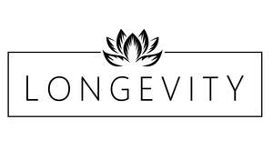

Trade Mark Journal No.2025/031 1 August 2025
UK00004232736 11 July 2025 (35,41,44)

- Class 35
- Retail services relating to nutritional, dietary and health supplements; retail services relating to vitamins; information and advice in respect of the aforementioned.
- Class 41
- Provision of strength and conditioning training; provision of physical fitness and strength assessment and tracking services; information and advice in respect of the aforementioned.
- Class 44
- Provision of medical services; provision of medical clinics; provision of medical consultation services; provision of medical care services; provision of medical advisory services; provision of medical information services; provision of medical counselling services; provision of medical treatment services; provision of medical health assessment services; medical examination of individuals; testing and screening for medical, diagnostic, nutritional and fitness purposes; compilation and provision of medical, nutritional and health reports; provision of nutritional advice; provision of nutritional guidance; provision of dietary and nutritional advisory and consultancy services; provision of information relating to dietary and nutritional supplements; provision of nutritional information about food and medical weight loss; provision of spa services; provision of health and medical spa services; provision of spa facilities; provision of medical, beauty and cosmetic treatment services provided by a health spa; provision of health clinic services; provision of health farm services; provision of health resort services; health, nutritional, fitness and wellness monitoring, evaluation and assessment services; providing information in the fields of health, nutrition, fitness and wellness; provision of personalised health, nutrition, fitness and wellness protocols generated from real-time biometric data; information and advice in respect of the aforementioned.
Peak Health Consulting Limited
Representative: Sonder & Clay